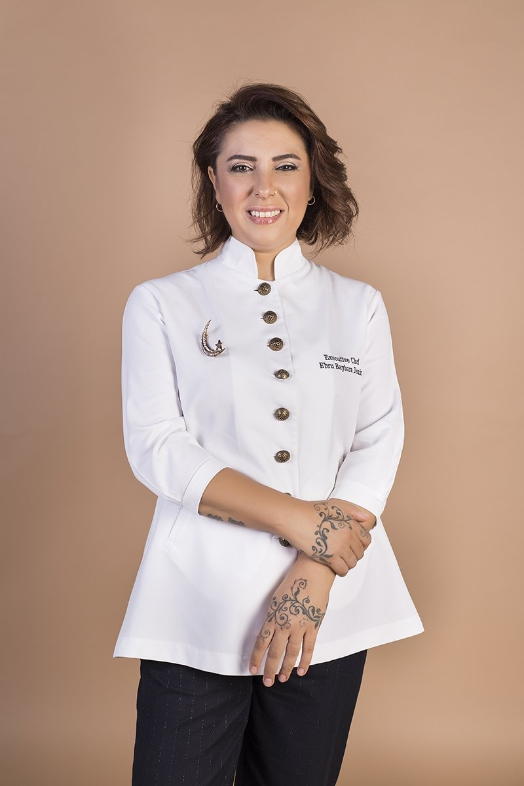
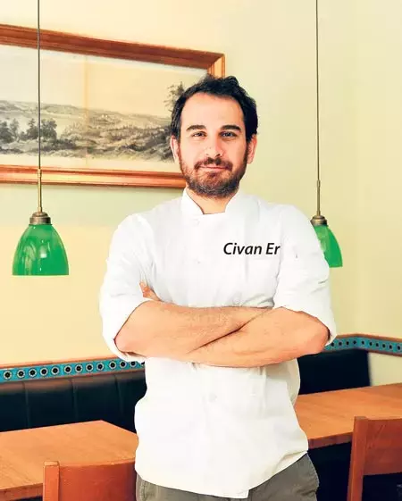

Osman Sezener
Restaurant: OD Urla (Izmir)
Awards:Sezener and his kitchens have been recognized with many awards; OD Urla was awarded 1 Michelin Star in the Michelin Guide 2024 Istanbul-Izmir-Bodrum list and the Green Michelin Star for its contribution to sustainability. The restaurant also received 3 Toques and ‘Best Sustainability Awards’ in the Gault&Millau 2024 Türkiye Guide. Pizzeria Venedik also received 1 Michelin star, while Kitchen Bodrum, another restaurant of Sezener, received 1 star in the Michelin guide and 2 Toques in the Gault&Millau 2024 Türkiye Guide.
About: Osman Sezener focuses on local ingredients from the Aegean region, highlighting sustainable cuisine. OD Urla operates with a farm-to-table concept, offering a gastronomic experience that respects nature. The chef combines local ingredients with modern techniques to create unique dishes.
Ebru Baybara Demir
Restaurant: Narin (Istanbul)
Awards: Gault&Millau Turkey 2022: Recognized for her creative approach to Turkish regional cuisine. Best Chef by the Turkish Culinary Federation Sustainability Award at the Turkish Culinary Arts Congress
About: Ebru Baybara Demir is a renowned chef who draws inspiration from Anatolian flavors, combining them with contemporary techniques. She is celebrated for her focus on sustainability and the use of local, organic ingredients.
Civan Er
Restaurant: Yeni Lokanta (Istanbul)
Awards:Michelin Guide Bib Gourmand (2023). Gault&Millau Türkiye 2024: His restaurant, Yeni Lokanta, was awarded 2 Toques, recognizing its excellence in Turkish cuisine.
About: Civan Er is known for his contemporary take on Turkish cuisine, with a focus on traditional dishes served in a modern way. His restaurant, Yeni Lokanta, combines high-quality ingredients with creative presentation, giving a fresh perspective on Turkish dining.